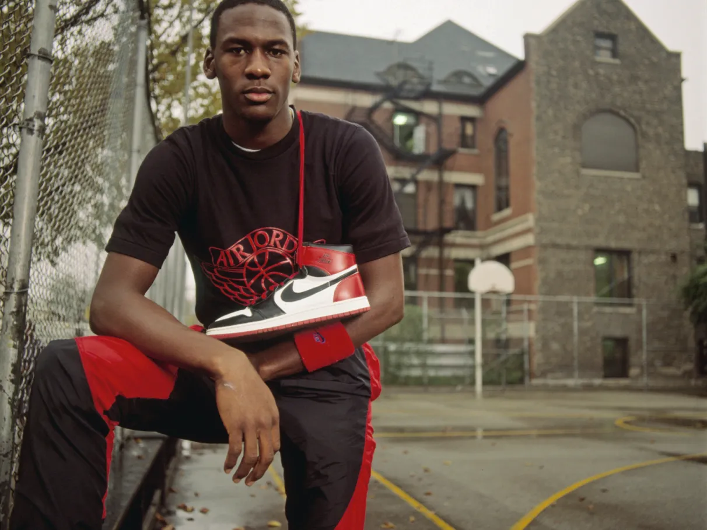
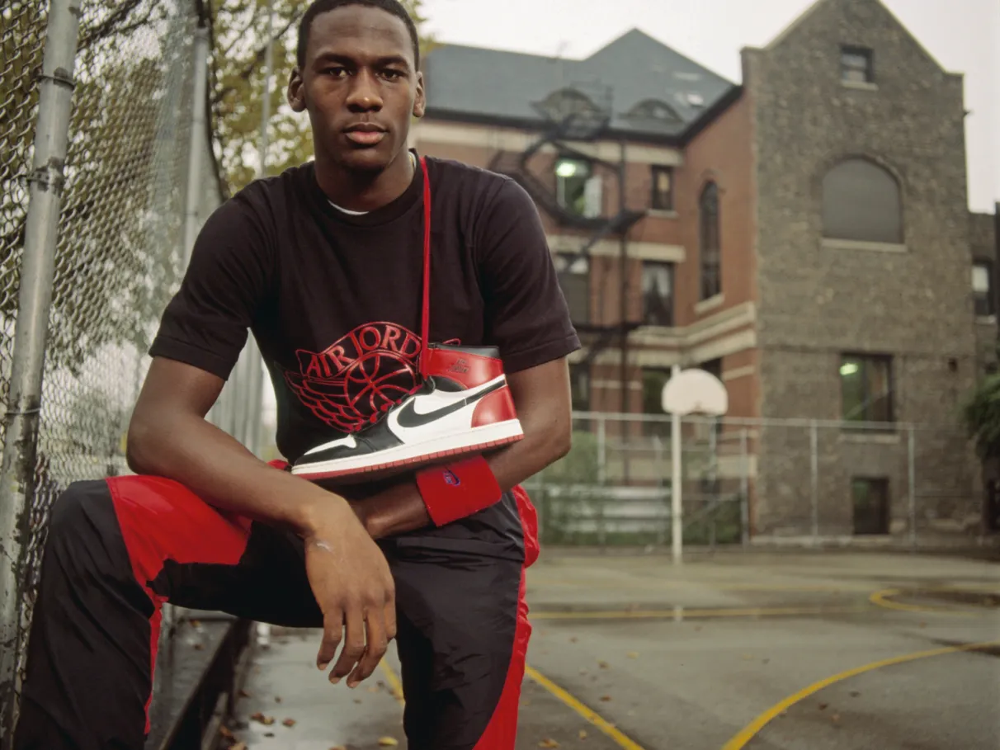

Exposição do Michael Jordan
Michael Jordan nasceu em 17 de fevereiro de 1963 em Nova York. Ele se destacou no basquete universitário pela Universidade da Carolina do Norte e foi selecionado pelo Chicago Bulls em 1984. Durante sua carreira na NBA, ele ganhou seis campeonatos com os Bulls, além de inúmeros prêmios individuais. Jordan se tornou um ícone global, conhecido por sua habilidade no jogo e sua marca Jordan. Ele se aposentou pela primeira vez em 1993, tentou jogar beisebol e retornou ao basquete em 1995 antes de se aposentar definitivamente em 2003. Sua influência no esporte e na cultura continua até hoje.
Momentos Históricos em sua Carreira:
 
